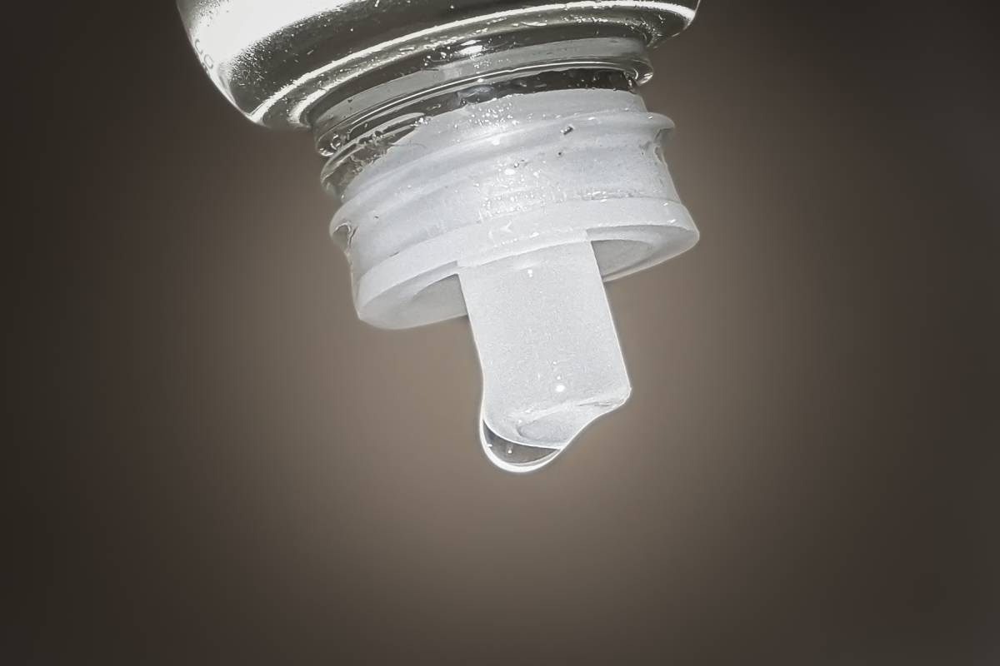

Topical anesthesia is useful in many areas of surgery, providing a localized solution for pain management during various medical procedures. Unlike general anesthesia, which induces unconsciousness, topical anesthetics are applied directly to the skin or mucous membranes, numbing specific areas to minimize discomfort.
Topical anesthetics are medications that block nerve signals in a localized area. They come in various forms, including creams, gels, ointments, and sprays, and typically contain agents like lidocaine, benzocaine, or prilocaine. These agents work by inhibiting the influx of sodium ions into nerve cells, effectively preventing the sensation of pain.
Topical anesthesia is used in several surgical contexts, particularly in outpatient or minimally invasive procedures. Dermatological procedures frequently employ topical anesthetics during skin surgeries such as biopsies, excisions, or cosmetic interventions. In dental practices, topical anesthetics are often applied before injections to minimize discomfort for patients with dental anxiety. In some types of ocular surgery, topical anesthetics are applied to the eye's surface to provide pain relief while keeping patients awake, which facilitates quicker recovery and reduces sedation risks. For minor surgical interventions, such as suturing small lacerations or removing foreign bodies, topical anesthetics can provide sufficient pain control without the need for more invasive anesthesia methods. Topical anesthesia is also often used during procedures that require a device to be inserted into the patient's throat, such as for intubation or upper GI endoscopy.
The use of topical anesthesia during surgery offers several advantages. Since these anesthetics are applied locally, they minimize the systemic side effects associated with general or regional anesthesia. This is especially beneficial for patients with underlying health issues or those at higher risk for complications. Procedures performed under topical anesthesia typically allow for quicker recovery, enabling patients to resume their daily activities sooner.
However, there are some limitations that require consideration. Topical anesthetics may not provide sufficient pain relief for more invasive or extensive surgeries, making regional or general anesthesia necessary in such cases. Some patients may have allergies or sensitivities to specific topical anesthetics, so a thorough medical history should be taken. Effective topical anesthesia often also requires a certain amount of time to take effect, so surgeons must plan procedures accordingly to ensure optimal pain control.
In conclusion, topical anesthesia is essential to pain management in various fields of surgery, providing a safe and effective alternative to more invasive anesthesia methods. As healthcare continues to evolve, the role of topical anesthesia in surgery is likely to expand, offering new opportunities for improving patient care and enhancing surgical outcomes.